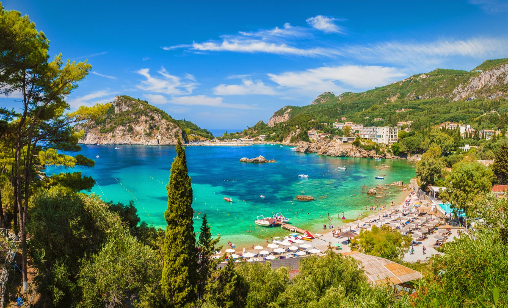
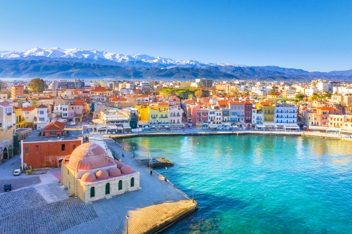
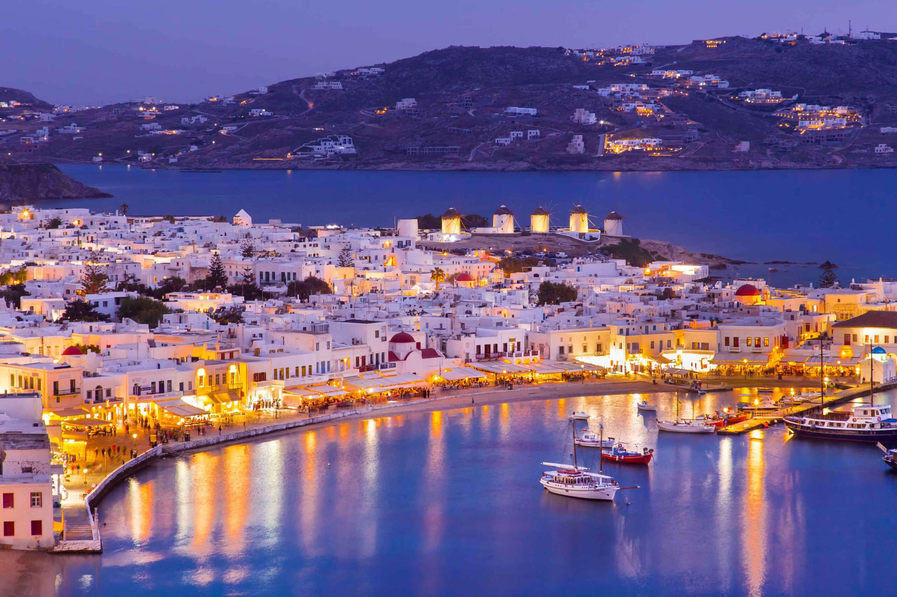

{kind=link}
Santorini, Greece
A timeless blend of history, culture, and beauty
Why Santorini, Greece Is Special To Me
Greece is special to me because it’s been my dream since childhood. The beautiful beaches, ancient ruins, and vibrant culture always captivated me. It’s where history and natural beauty meet, making it a place I’ve always wanted to experience.
How to Get There
Airports:
- Eleftherios Venizelos International Airport (ATH): The main international airport, located about 20 minutes from central Athens.
Public Transportation:
- Metro: The Athens Metro is a quick and affordable way to travel, especially to major sites like the Acropolis.
- Buses & Trolleybuses: A comprehensive network, though not always the quickest option due to traffic.
- Taxis & Ride-Sharing: Taxis are easy to find, and ride-sharing services like Uber are available.
Other places to visit in Greece

Acropolis of Athens
The iconic ancient citadel featuring the Parthenon, a symbol of Greece's rich history.

{kind=link}
Corfu
An island with Venetian influences, lush greenery, and beautiful coastal villages.

{kind=link}
Crete
The largest Greek island, known for its ancient ruins, beautiful beaches, and mountain villages.

{kind=link}
Mykonos
A vibrant island with lively nightlife, picturesque beaches, and charming streets.